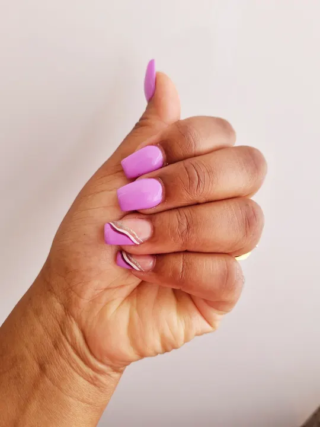
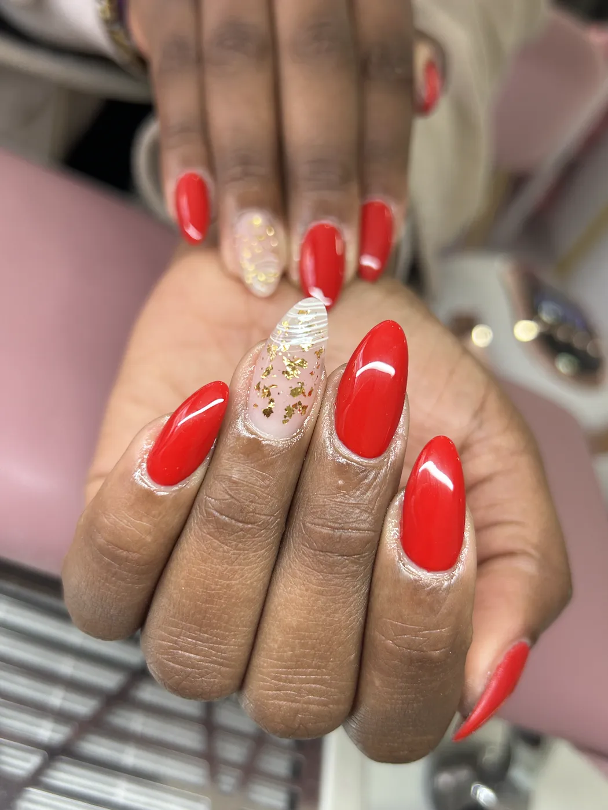
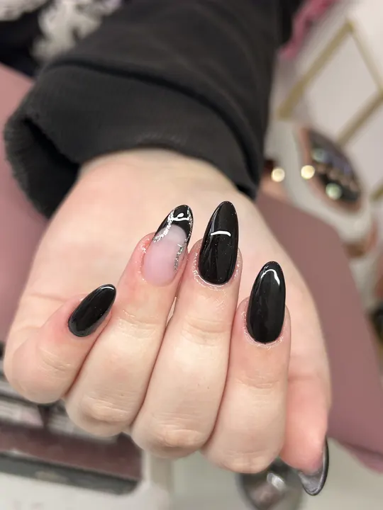
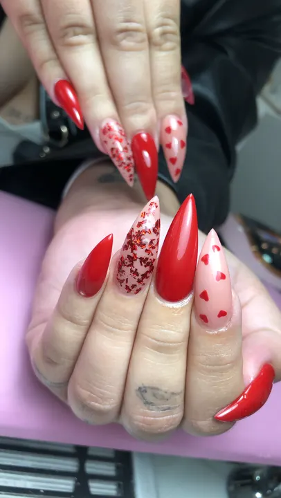
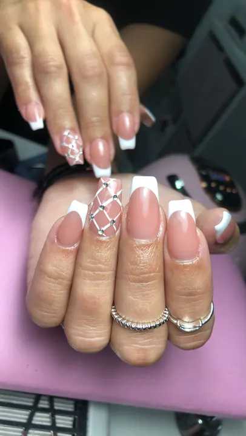
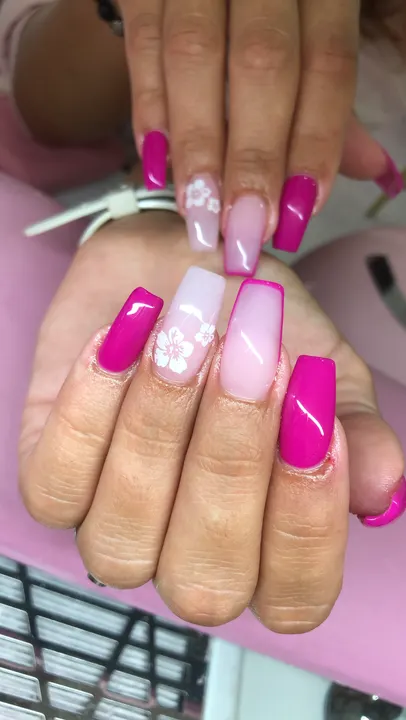
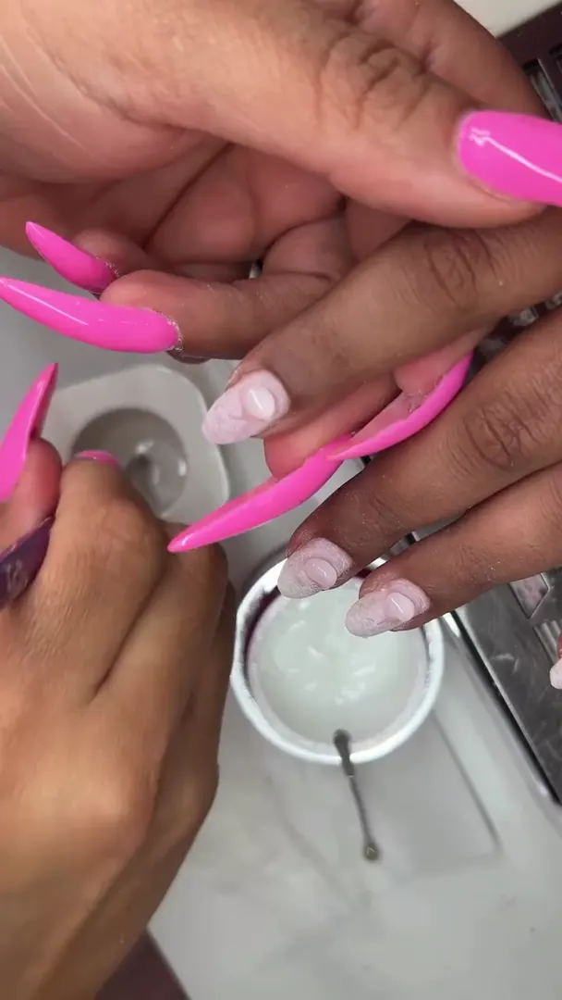
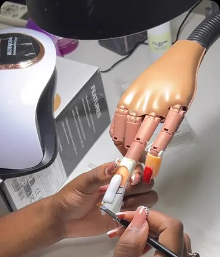
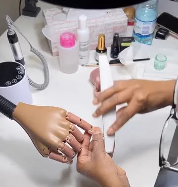
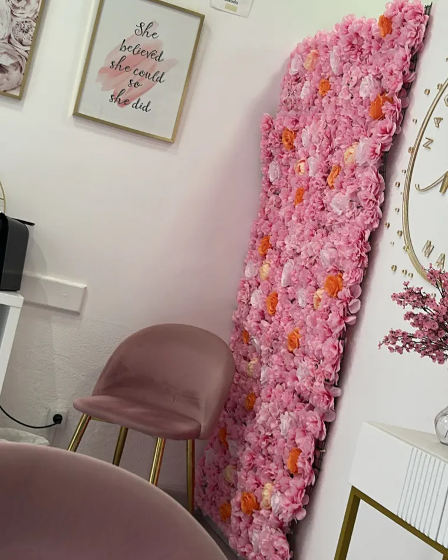

Nail salon • Algueirão
Nadine Barbosa Nails
Manicure, pedicure e nail art personalizada com detalhe profissional e um toque de conforto. Agende a sua visita.







Porquê Nadine
Técnica, conforto e acabamento de autor
Nadine combina técnicas atualizadas de manicure e pedicure com um cuidado artesanal no acabamento e higiene. O espaço oferece atenção individual, produtos profissionais e uma experiência pensada para relaxar.
- Acabamento duradouro com gel de alta qualidade
- Higiene e esterilização rigorosa de instrumentos
- Nail art personalizada e consultoria de cor
Nail art personalizada
Design à medida, desde minimalista até decorações complexas.
«A Nadine atende sempre aos meus pedidos de desenhos ou puxa da imaginação quando não tenho ideias.»
Sara Russo, no Google
Serviços
O que faço
Tratamentos pensados para unhas saudáveis e acabamento de autor. Escolha o serviço e agende via WhatsApp.
Avaliações
O que as clientes dizem
5,0
Nota 5, com 33 avaliações no Google. Um selo de confiança que reflete o cuidado do atendimento.
33 avaliações no Google · classificação média 5★«Desde a primeira vez que fui, senti-me super à vontade: é super querida, atenciosa e percebe exatamente o que queremos, mesmo quando vamos sem ideias.»
«Desde muito nova sempre roía as unhas. Depois que conheci a Nadine, as minhas unhas ficaram mais fortes, lindas e deixei de as roer!»
«Sem dúvida que a Nadine é a fada das unhas: além de as deixar sempre perfeitas é super rápida, então quando marco sei que é compromisso certo.»
«A melhor da zona de Mem Martins e arredores. Não é terapia mas é terapêutico.»
Nadine Barbosa Nails Academy · Formação de Acrigel
Fazer unhas começa na técnica. E técnica aprende-se.
Queres viver das unhas e criar a tua própria renda? Eu ensino-te do zero.
- Formação para iniciantes
- Certificado SIGO/DGERT
- Kit completo incluído
- Acompanhamento após formação
Paga em 3x com KlarnaVagas limitadas


Desde a preparação da unha natural até à finalização profissional.
- Preparação
- Cada passo é explicado.
- Cada detalhe é acompanhado.
- Cada dúvida é esclarecida.
- Finalização

Contacto
Agende a sua visita
Atendimento por marcação. Horários flexíveis e opção de reagendar via WhatsApp.
- Telefone / WhatsApp
- +351 967 270 170
- Horário
- Terça a sexta · 10:00 às 16:30Sábado · 10:00 às 14:00
- Agendamento rápido
- Marcar online